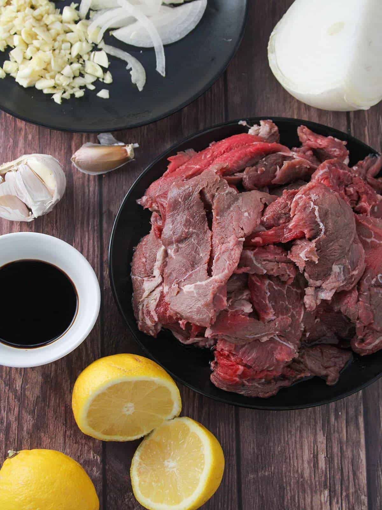
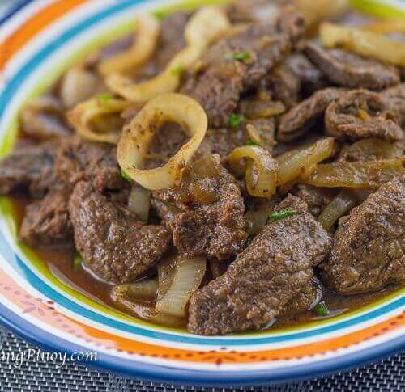

Bistek Tagalog Recipe
Ingredients
- 2 pounds top round or sirloin, sliced thinly
- 2 lemons, juiced (about ¼ cup juice)
- ¼ cup soy sauce
- 1 onion, peeled and sliced thinly
- 1 head garlic, peeled and minced
- ¼ teaspoon pepper
- 3 tablespoons canola oil
- 1 cup water
- salt to taste
- 1 onion, peeled and sliced into rings

Instructions
-
In a bowl, combine beef, lemon juice, soy sauce, sliced onions, garlic,
and pepper. Massage marinade into the meat and marinate for about 30
minutes.
-
Remove meat, onions, and garlic from marinade, squeezing and reserving
excess liquid.
-
In a pan over high heat, heat oil. Add beef and cook for about 3 to 5
minutes per side or until lightly browned. Spoon out and reserve
released meat juices during frying. Remove meat.
-
In the pan, add onions and garlic, and cook, stirring regularly, until
softened. Return browned beef to pan.
-
Add reserved marinade and meat juices. Add water and bring to a boil.
-
Cover, lower heat, and simmer for about 40 to 50 minutes or until meat
is fork-tender and liquid is reduced. Season with salt to taste.
-
Turn off heat. Garnish with onion rings, if desired, and cover to allow
onions to cook slightly in the steam. Serve hot.

Visit Kawaling Pinoy for more recipes